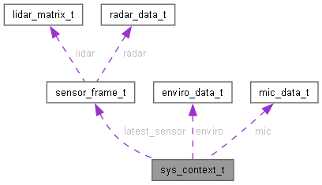

- Generated by
 1.14.0
1.14.0
|
LexaCare V1 — Firmware ESP32-S3 v1.0
Système de détection de chute par LIDAR et Radar
|
#include <system_types.h>

Data Fields | |
| QueueHandle_t | sensor_to_ai_queue |
| QueueHandle_t | ai_to_mesh_queue |
| QueueHandle_t | diag_to_pc_queue |
| QueueHandle_t | log_queue |
| spi_device_handle_t | lidar_spi [LIDAR_NUM_FRONT] |
| SemaphoreHandle_t | data_mutex |
| sensor_frame_t | latest_sensor |
| bool | sensor_valid |
| enviro_data_t | enviro |
| mic_data_t | mic |
| bool | lidar_ok [LIDAR_NUM_TOTAL] |
| bool | radar_ok |
| bool | is_root_node |
Definition at line 226 of file system_types.h.
| QueueHandle_t sys_context_t::ai_to_mesh_queue |
ai_event_t, profondeur 8
Definition at line 229 of file system_types.h.
Referenced by send_ai_event(), and task_mesh_com().
| SemaphoreHandle_t sys_context_t::data_mutex |
Mutex lecture/écriture snapshot
Definition at line 237 of file system_types.h.
Referenced by build_sensor_json(), and task_sensor_acq().
| QueueHandle_t sys_context_t::diag_to_pc_queue |
ai_event_t, profondeur 8
Definition at line 230 of file system_types.h.
Referenced by build_sensor_json(), and send_ai_event().
| enviro_data_t sys_context_t::enviro |
Definition at line 242 of file system_types.h.
Referenced by build_sensor_json(), and task_sensor_acq().
| bool sys_context_t::is_root_node |
true si PIN_ROOT_SEL est bas au démarrage
Definition at line 250 of file system_types.h.
Referenced by hw_diag_run(), mesh_manager_init(), and task_mesh_com().
| sensor_frame_t sys_context_t::latest_sensor |
Dernière trame LIDAR + Radar + IA
Definition at line 238 of file system_types.h.
Referenced by build_sensor_json(), and task_sensor_acq().
| bool sys_context_t::lidar_ok[LIDAR_NUM_TOTAL] |
true si le capteur i a répondu au ping
Definition at line 248 of file system_types.h.
Referenced by diag_print_json_report(), diag_scan_lidars(), hw_diag_run(), and task_sensor_acq().
| spi_device_handle_t sys_context_t::lidar_spi[LIDAR_NUM_FRONT] |
SPI device par capteur LIDAR
Definition at line 234 of file system_types.h.
Referenced by diag_init_spi_lidars(), diag_scan_lidars(), and task_sensor_acq().
| QueueHandle_t sys_context_t::log_queue |
char*, profondeur 16
Definition at line 231 of file system_types.h.
| mic_data_t sys_context_t::mic |
Definition at line 245 of file system_types.h.
Referenced by build_sensor_json(), and task_sensor_acq().
| bool sys_context_t::radar_ok |
true si une trame LD6002 valide a été reçue
Definition at line 249 of file system_types.h.
Referenced by diag_print_json_report(), diag_test_radar(), and hw_diag_run().
| QueueHandle_t sys_context_t::sensor_to_ai_queue |
sensor_frame_t, profondeur 4
Definition at line 228 of file system_types.h.
Referenced by task_ai_inference(), and task_sensor_acq().
| bool sys_context_t::sensor_valid |
true si latest_sensor contient des données
Definition at line 239 of file system_types.h.
Referenced by build_sensor_json(), and task_sensor_acq().